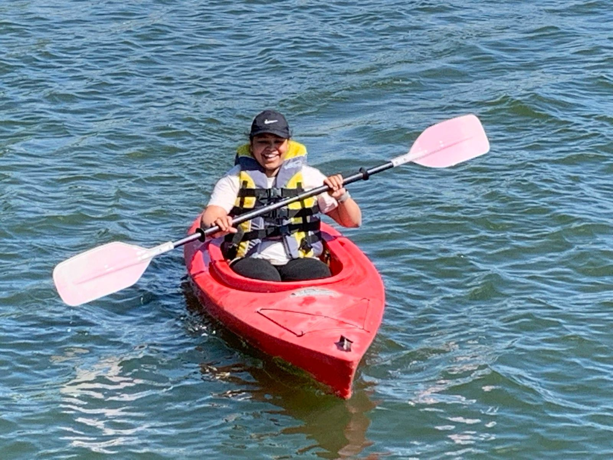
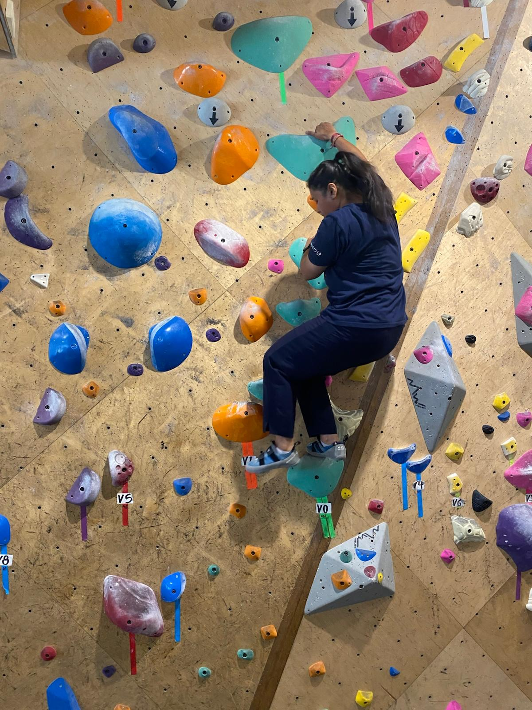
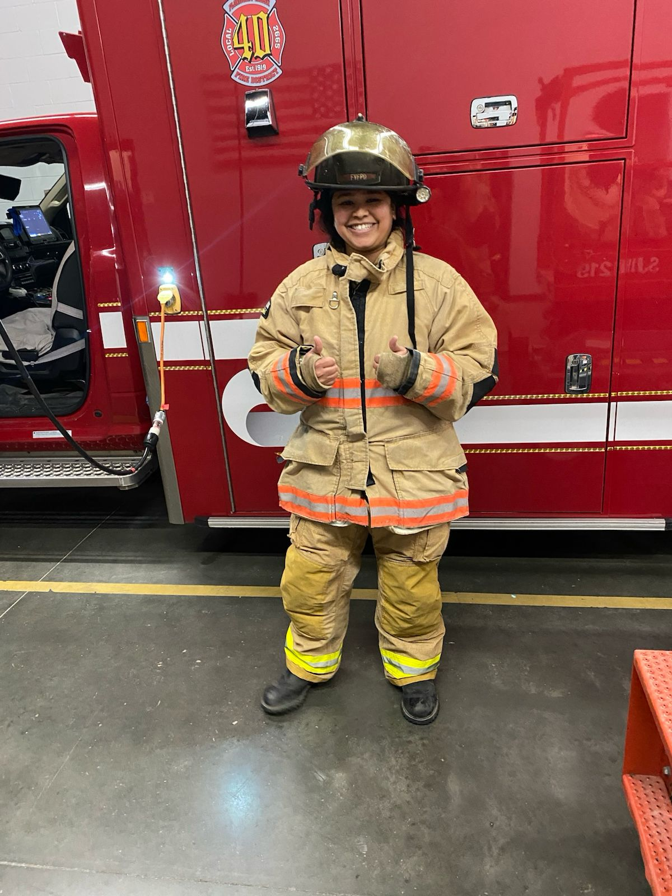

I spend most of my time working with sequencing data, pipelines, and models that refuse to converge. Outside of that, I actively seek things that require zero alignment files and zero debugging logs.
This page is a small window into the non-computational side of my life.



I strongly believe good science comes from stable humans, not just good pipelines.